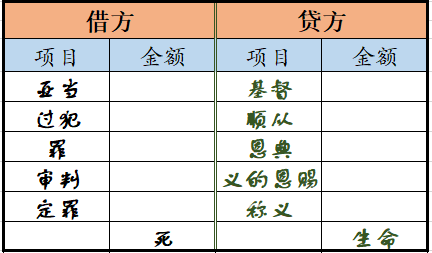

调速
罗马五章十二节标明保罗写罗马书主要的转折点。我们曾指出，这转折点是从诸罪转到罪，从地位转到性质，并从称义转到圣别，或者可以说，从救恩转到生命。保罗这样转了以后，就开始对付我们这个人，而不是对付我们的行为。在罗马书前四章半，保罗论到人的行为，不是论到人自己，他广泛的说到堕落之人罪恶的行为。我们已从那堕落的光景被带到恩典的范围，在这里我们可以享受神。然而，这仅仅是光景、范围和地位的改变。在人自己里面，在他的性情或性质里，还没有改变。虽然人的行为受了对付，他的情形也改变了，但人自己还没有被摸着。
从罗马五章十二节开始，保罗对付人自己。我们必须从人的情形、处境、环境和地位再往前去，因这一切事在前面几章已经完全解决了。这些问题已经解决，人已经得着洗净、赦免、称义并和好。现今眼前的问题是人自己。神圣话语中没有一段像罗马五至八章这样彻底的暴露人。在这四章里，人被保罗敏锐的诊断；保罗似乎用尽各种属灵工具，诊断人的疾病。
在罗马书这段所暴露的是怎样的人？他是里面有罪的人，在死作王之下的人，所以是在神公义的审判和定罪之下的人。人已被撒但邪恶的性情毒害，被罪的毒刺所伤。人自己完全是罪恶的，不但在他可怕的行为上，也在他的性质和性情上。就人的所是而论，人完全是罪恶的。罪在人堕落的身体里，人在死的作王之下，被神审判并定罪。这是罗马五至八章里所下的诊断。
在我继续讲罗马六章以前，我要重温我们就着五章后半所说过的——两个人，两种行为，和两样结果，带着四件作王的事物。虽然这些事曾在第十篇简要的说过，但我们若再从另一角度探讨，可能会对读者有益。
现在我要将一切属亚当的，和一切属基督的，作清楚、明确的对比。为此，我们可用会计的借方和贷方这两个辞。在会计里有借方栏和贷方栏。基于这两栏，我们可算账或记账。我不是头一个用“算”字说到属灵之事的人，因使徒保罗这个优秀、属天的会计师，自己也用了这辞。在罗马书里保罗好几次用“算”字，这字的意思也是“记账”。首先，神算亚伯拉罕的信为义（四3，9，22）。亚伯拉罕借着相信神而对祂有反应，神这属天的会计主任，看着数字，似乎说，“亚伯拉罕的这信该算为义。我把义记入亚伯拉罕的贷方。”因此，神把义记在亚伯拉罕账上的贷方栏。不但如此，保罗说，没有律法，罪也不算在账上（五13）。这话更好的翻译是，没有律法，罪也不记在账上。说罪不算在账上，实际上的意思是罪不记在账上。没有律法罪已存在，但没有记入神的账簿。我们来到罗马六章，必须用我们属灵的数学作一些会计工作（11）。既然我们已经与基督同钉十字架，并与祂同复活，我们就必须将这事实记入我们的账簿，就是我们必须算自己向罪是死的，向神是活的。
让我们继续画两栏，借方栏和贷方栏，为着亚当和基督。在这总账上，借方的第一项是亚当自己。亚当为我们众人构成了大笔债务。在亚当之下，第二项是过犯，或用同义辞悖逆。按罗马五章里的用法，过犯和悖逆都是指同样的事。这二辞交互使用，标明亚当的堕落。这堕落造成巨额债务，用货币的说法，就是达到无数的金额。借方栏的第三项是罪，乃是借着亚当的过犯进来的。照着罗马五章，借方的第四项是审判，随着罪的进入而来。神是清明的神。祂不但是公义的，也是清明的；祂总是儆醒的，从不睡觉。亚当犯罪之后，神立刻干预，并施行审判。因此，审判总是跟着罪而来。不要以为你必须等到死了才受审判，因我们六千年前在亚当里都已受了审判。我们在出生以前就受了审判。因此，审判是借方栏的第四项。第五项是定罪。神的定罪跟着祂的审判而来。所以，亚当同着包括在他里面的每个人，都在神的定罪之下。我们既出于亚当，亚当被定罪时，我们就在那里。
借方栏的总额是什么？总额就是死。我们可将死列为第六项，但实际上，死是前五项的总额。亚当、过犯、罪、审判和定罪的总额是死。这是人类会计记录上宇宙借方栏的总额。
为着贷方栏，阿利路亚！在宇宙的账上也有贷方栏。本栏的第一项是与亚当相对的基督。虽然基督与亚当相对，但二者无法相比。保罗说，“只是过犯不如恩赐。”（五15）。亚当不如基督，因亚当无法与基督相比。基督远超过亚当。基督记入贷方栏，跟着就是加上无数的零。我很喜乐，现今这一切都是我们的贷方。我不在意亚当的借方。我有基督。
在基督之下有贷方栏的第二项，就是顺从。基督顺从以至于死在十字架上，这被称为祂的义行。顺从和义行是同义辞。亚当的行为称为过犯和悖逆，基督的行为称为顺从或义行。基督的顺从何价？没有计算机能计算。
基督的顺从和义行怎样与亚当的悖逆和过犯相对，照样，恩典也与罪相对。因此，恩典是贷方栏的第三项。哪一样更得胜，罪或恩典？保罗清楚告诉我们，无法相比，因“罪在那里增多，恩典就更洋溢了”（五20）。恩典超过罪到什么程度？我不知道，甚至保罗自己也只说“更”。不要忧虑罪的借方，因为恩典的贷方多得多（17）。
我们看过审判是借方栏的第四项。贷方哪一项与此呼应？与审判相对的一项是义的恩赐（五17）。可能你从来没有领会这点。罗马五章的“恩赐”一辞是什么意思？有些人会说，它的意思是指说方言或其它神奇的恩赐。然而，你若读罗马五章，就会看见那里所提的恩赐是神的义。五章十七节说到洋溢之恩和洋溢之义的恩赐。神的恩典已揭示出来，临到我们并给我们白白的恩赐——神的义。你若一再读罗马五章，就会看见是这样；罗马五章的恩赐，就是借着神的恩典所给我们的义。就如我们所看见的，恩典是神自己作我们的享受。从这享受，这恩典，神的义赐给我们作我们的恩赐。审判来自罪，义来自恩典。因此，义与审判相对。只要你有神的义，你就不在审判之下。义的恩赐消除审判。我若得着神的义，你怎能审判我？我和神一样是义的。只要我们有义的恩赐，审判就是不可能的。
在义的恩赐之后，有与定罪相对的称义。所以，贷方栏有五项。这些项目的总额是生命，这也可视为第六项。
让我们结算我们的账目。我们有死作借方的总额，有生命作贷方的总额。哪一个更大？答案当然是生命。然而，这生命不是我们肉身的生命（bios，白阿司——路八14），或我们的魂生命（psuche，朴宿克——太十六25～26，约十二25）；乃是指神的神圣、永远、非受造、无限、吞灭死亡的生命（zoe，奏厄——约十一25，十四6，西三4）。这生命是基督自己作我们复活的生命。因此，贷方的总额超过借方的总额。
以这一切为根基，现在我们可往前到罗马六章。我们若没有罗马五章为根基，就绝不能清楚罗马六章。这不再是两种处境或两种光景的问题，乃是两个人位，两个人的问题。头一个人是亚当同借方的一切项目，第二个人是基督同贷方的一切项目。你属于哪一个人？
罗马书生命读经
壹 在基督的死与复活里与祂联合
既然我们都生在亚当里，我们怎能说我们现今在基督里？
一 浸入基督
在罗马六章三节保罗说，“岂不知我们这浸入基督耶稣的人，是浸入祂的死吗？”虽然我们生在头一个人亚当里，但我们已浸入第二个人基督里。基督徒争辩受浸外面的形式，这是何等可怜！有些人争论用怎样的水，有些人争辩受浸的方法。受浸的意思是被放在基督里，被放在祂的死里。无论我们好或坏，我们都生在亚当里。现今我们看见另一个人基督。我们怎能进入祂里面，并成为祂的一部分？路就是浸入基督。受浸的意义就是将人放在基督里。这不是仪式或形式，乃是极其重要的经历。在受浸的举动里必须有属灵的迁移发生；我们对这点若没有领悟，就不该摸受浸的事。绝不要在仪式上给人施浸。我们必须有把握并领悟，我们为人施浸时，是将他们放在基督里。一旦我们领悟受浸的意义，我们就不会让受浸沦为外面的形式或仪式。我们在受浸这个举动里，将属亚当的人放在死里，因此将他们迁出亚当，并迁入基督。人是浸入基督。甚至钦定英文译本在罗马六章三节也用“入”字。人因着争辩形式和方法而分裂，真是偏离目标！每当我们为人施浸的时候，我们只在意将他们放在基督里。持守一种仪式是可怕的，但将人浸入基督乃是美妙的。
赞美主，我们已浸入基督！虽然我们生在亚当里，但借着受浸，我们已在基督的死与复活里与祂联合。借着死与复活，基督从肉体改变形状，成为那灵。甚至基督自己也需要死与复活，使祂从肉体变化成那灵。同样，借着在基督的死与复活里与祂联合，我们已迁出亚当，并迁入基督。我们浸入基督，就从原为亚当的一部分迁移到成为基督的一部分。现今我们不再在亚当里，我们完全在基督里。这是联合的事实。现在我们必须清楚看见并领会与此有关的另外两点。
二 浸入祂的死——在祂死的样式里与祂联合生长
罗马六章五节说，我们在祂死的样式里与祂联合生长。这是什么意思？六章五节里“祂死的样式”一辞是指受浸。受浸是基督死的样式。在受浸里，我们与基督联合生长。“联合生长”这辞叫翻译的人很为难。然而，我们若仔细来看原文的意思，就不会有难处。同样的希腊字用于路加八章七节，说到与麦子一同生长的荆棘。同样，我们与基督联合生长。我们浸入基督，就一面说我们被治死，就另一面说我们开始生长。这与将种子撒在地里非常类似。表面上种子撒播下去，实际上它开始生长。借着浸入基督，我们都在基督死的样式里与祂联合生长。我们既在基督死的样式里与它联合生长，现今就与祂一同生长。我们已经死了，却正在生长。
三 在生命的新样中生活行动
我们也在基督复活的样式里与祂联合生长（罗六4～5）。祂复活的样式是什么？就是生命的新样。我们都应当在这生命的新样中生活行动。我们都必须看见这两点。我们必须看见，我们在受浸时与基督联合生长，并且在基督复活的样式里，就是在祂复活生命的新样中，与祂联合生长。我们若看见这点，意思就是我们看见我们已与祂同死，现今我们正与祂同长。我们在受浸时与祂同葬，现今我们在祂的复活里，在祂神圣的生命里，与祂同长。我们必须照着我们所看见的生活行动，就是在生命的新样中生活行动。
贰 知道与算
一 借看见而知道
在罗马五章，我们生在亚当里，并被构成了罪人。在罗马六章，我们已浸入基督，并且与祂的死和复活联合。现今我们在基督里。因着我们在祂里面，祂所经过的就是我们的历史。祂被钉十字架并复活了。因此，祂的钉十字架与复活就是我们的。这是荣耀的事实。我们需要看见这点，不只明白这点。我们需要祷告，求主使我们对这荣耀的事实有清楚的异象，就是我们在祂里面，我们也与祂同钉十字架并同复活。要知道这点，我们需要看见这样的异象；这样的异象对我们的知道是基本的。我们看见某件事以后，绝不能说我们不知道这事。神完成了将我们放在基督里的荣耀事实；我们已经与祂同钉十字架并同复活。
我们的知道是基于我们的看见，而我们的看见来自异象。我们需要异象，看见在罗马六章六至七节，我们与基督同钉十字架，在六章八至十节，我们与基督同复活。我们若看见我们与基督联合之事实的这两面，就知道我们向罪是死的，向神是活的。
这件事不是基于我们的信，乃是完全基于我们的看见。我们借着异象，看见这荣耀的事实时，就不能不信这事实，并且领悟我们与基督同死，也与祂同复活。借着这样的看见，我们有完全的把握，知道我们向罪是死的，向神是活的。
我必须再次强调我们需要异象，看见罗马六章里所启示的荣耀事实。许多基督徒对罗马六章有道理上的知识，却从未看见本章所揭示之事实的异象。在道理上领会一件事，与在异象中看见那件事完全不同。关于罗马六章的这个难处，在基督徒中间很普遍。许多人以为他们明白罗马六章的道理，却没有借着异象看见事实。许多人强调信的事；但你若没有看见事实，你就很难借着道理上的明白而信。你一旦在异象中看见这事实，自然而然就会相信这事实。因此，保罗所说的“知道”，实际上的意思是在属灵的异象中对事实的看见。因此，我们都必须祷告，求主拯救我们，不满足于对罗马六章仅仅有道理上的明白，并求主在我们灵里给我们清楚的异象，使我们看见本章所启示荣耀的事实。然后我们就会实际的知道这事实。
二 借信而算
基于我们看见罗马六章所启示的事实，我们必须作算的事。我们必须向罪算自己是死的，向神算自己是活的（11）。一面，我们必须向罪算自己是死的；另一面，我们必须向神算自己是活的。这个算是基于我们的看见。我看见我已经与基督同死，并且我正在基督的复活里与祂一同生长。所以，我自动并继续的向罪算自己是死的，向神算自己是活的。这是算的事。在我们的账目下，贷方有很大的一项——向罪是死的，向神是活的。
算是在于看见所产生的信。我们看见了事实，就借着信我们已经与基督同钉十字架并同复活，而向罪算自己是死的，向神算自己是活的。一旦我们看见了事实，我们就信我们是这样。然后我们借着信我们所看见的而算。
许多基督徒受教导，得着算自己是死的技术，许多人也这样实行。至终，所有的人都能证明，这技术不管用。这不在于技术，乃在于看见事实，结果就凭自然而有的信去算。仅仅照着道理上的明白，运用算的技术，而没有看见事实，结局总是失败。使徒保罗提起借看见事实而知道的事以后（6～10），才指引我们向罪算自己是死的，向神算自己是活的（11）。算需要看见，看见的结果是信。我们若看见了事实，就会相信这事实，并照这事实去算。
叁 借拒绝并献上以合作
我们向罪算自己是死的，向神算自己是活的，就需要将我们的肢体“献给神作义的兵器”（六13）。许多译本这句话不是这样翻译。钦定英文译本不用“兵器”，而用“器具”。然而，同样的希腊字用于林后六章七节“义的兵器”这辞。保罗说他有义的兵器。因此，由于义与不义之间的争战，保罗在罗马六章的观念是义的兵器，不是义的器具。七章二十三节证明，有一场争战在人里面猛烈进行。十三章十二节说，“我们当……穿上光的兵器。”这也证明争战在猛烈进行。在这样的争战中，我们不需要器具；我们需要兵器。我们身体的每个肢体都是兵器。我们该为着下一场争战儆醒，因我们一直在争战。一旦我们领悟我们向罪是死的，向神是活的，并且算自己是这样，我们就必须献上我们的肢体作义的兵器以争战。
不但如此，我们需要献上自己和我们的肢体作神的奴仆（六16，19，22）。我们若将自己献给神作奴仆，并献上我们的肢体作义的兵器，我们就自然而然的圣别。这就是说，我们与那住在我们里面作生命的复活基督站在一边。我们与这永远的生命站在一起。这样我们就给永远的生命机会，在我们里面作工，将我们从一切凡俗的事物分别出来，并圣别我们。这样献上的结果乃是圣别。这是我们经历的次序：看见、算、将自己献给神、拒绝罪、并与神合作。
我们必须拒绝罪，因罪仍住在我们堕落的身体里（六12）。不要再与罪合作；要拒绝罪，而与神合作。不要属灵到成为被动的，一点也不作什么。被动是可怕的；你若被动，就会受欺骗、受迷惑。我们既不该被动，也不该太主动，因为我们的被动或我们的主动都没有价值。那我们该怎么办？我们必须看见事实，向罪算自己是死的，向神算自己是活的，将我们的肢体和我们自己献给神，拒绝罪，并与我们的神合作。我们不该凭自己作什么。不要想去爱你的妻子，或服从你的丈夫。不要想办法谦卑或恩慈。然而，你需要拒绝罪。罪来向你提议时，你必须说，“罪，离开我。我与你无关。”不要让罪继续作主管辖你（14）。这意思就是你拒绝罪，并转向神说，“主，我是你的奴仆。我要与你合作。无论我爱不爱我的妻子，这都在于你。在爱的事上，我要与你合作。我要作你的奴仆。你无论作什么，我必跟随你，并与你合作。”不要被动或主动。只要拒绝罪，而与神合作。你若这样作，就不但是公义的，也是圣别的。你会经历内里、性质的改变。
圣别的结果是永远的生命（六22）。因此，罗马八章是接着罗马六章。罗马六章结束于圣别得永远的生命；罗马八章开始于生命之灵。不要问我罗马七章要放在那里。虽然这一章在圣经里，不能删去，但它能从我们的经历除去。我们可从罗马六章的末了跳到罗马八章的开头。
使徒保罗在罗马六章的意思是，一面，我们在与基督同钉十字架并同复活的事实里，另一面，我们有神圣的生命。我们与基督同钉十字架并同复活，这事实已将我们迁出亚当，迁入基督。神圣的生命使我们能过圣别的生活。我们需要看见我们已被迁移。基于我们的看见，我们借信算自己是这样。然后我们需要拒绝罪，并将自己和自己的肢体献给神，借此与神圣的生命合作。我们的确有地位拒绝罪，因现今我们“不在律法之下，乃在恩典之下”（14）。罪没有立场、没有权利对我们作任何要求。反而站在恩典之下的我们，有全权拒绝罪及其权势。同时，借着与基督站在一边，我们献上自己和自己的肢体，作神的奴仆，使神圣的生命在我们里面作工，用神的圣别性情来圣别我们，不但在地位上，也在性质上。
总括起来，我们可以说，我们都已浸入基督。借着浸入祂，我们在基督的死与复活里与祂联合。我们在祂的死里与祂联合生长，现今在祂复活的生命里与祂联合生长。我们看见我们向罪是死的，向神是活的，并在我们属天的账簿里这样算。基于这个算，我们献上自己作神的奴仆，并献上我们的肢体作义的兵器。这给我们里面神圣的生命机会，作它圣别的工作。然后我们学习拒绝罪，并与神合作。这一切的结果就是圣别，结局乃是永远的生命。赞美主！
罗马书 罗六1至23及注
肆 圣别 五12～八13
二 与基督的联合 六1～23
1 联合 1～5
第 六 章
6:1 这样，我们可说什么？我们可以仍留在罪中，叫恩典增多吗？
6:2 绝对不可！我们这向罪死了的人，岂可仍在罪中活着？
6:3 岂不知我们这1浸入2基督耶稣的人，是1浸入3祂的死吗？
【注1】 受浸不是一种形式或仪文，乃是我们与基督联合的表明。借着受浸，我们浸入基督，以祂为我们的范围，使我们在祂的死与复活里，与祂联合为一。
【注2】 我们原是生在亚当，头一个人（林前十五45，47）的范围里。现今借着受浸，就被迁到基督，第二个人（林前十五47）的范围里（林前一30，加三27）。
【注3】 我们浸入基督，也就浸入祂的死。祂的死将我们从世界和撒但黑暗的权势分别出来，并且将我们天然的生命、旧性、自己、肉体，甚至我们整个的历史，一并了结。
6:4 所以我们借着1浸入死，和祂一同2埋葬，好叫我们3在生命的新样中生活行动，像基督借着父的4荣耀，从死人中复活一样。
【注1】 基督与祂的死乃是联合为一的。在基督以外，我们绝不能浸入祂的死，因为祂有效之死的成分，只存在祂这复活、包罗万有者的里面。
【注2】 我们的旧人已经与基督同钉十字架（6），借着受浸，我们的旧人就与祂一同埋葬归入死。在天然方面，人先死后葬。但保罗指明，在属灵方面，我们先葬后死。我们不是直接死的，乃是借着受浸归入基督的死。
【注3】 我们受浸以后，就成了在复活里的新人。复活不仅是将来的光景，也是现在的过程。在生命的新样中生活行动，乃是今天在复活的范围里生活，并在生命中作王。这种生活对付我们里面属亚当的一切，直到我们完全变化，模成基督的形像（八29）。
【注4】 指神性的显耀。
6:5 我们若在祂1死的样式里与祂2联合生长，也必要3在祂1复活的样式里与祂联合生长；
【注1】 死的样式，就是4节所说的浸；复活的样式，就是4节所说生命的新样。
【注2】 这是生机的联结，在这联结里有生长发生，就是使一方有分于另一方的生命与特征。在这生机的联结里，凡基督所经历的，现今都成了我们的历史。祂的死与复活，现今是我们的，因为我们在祂里面，已经在生机上与祂联结。这就是接枝（十一24）。这接枝能：(一)排除我们一切消极的元素；(二)使我们身上神所造的功能得以复活；(三)拔高我们的功能；(四)充实我们的功能；(五)浸透我们全人，以变化我们。
【注3】 这不是指将来客观的复活，乃是指现今生长的过程。在受浸时，我们在祂死的样式里与祂联合生长；现今借着祂的死，我们长到祂的复活里。基督死的成分，如何只在祂里面，照样，基督复活的成分，也只在祂里面。祂自己就是复活（约十一25）。当我们经历正确的受浸以后，就在基督复活的样式里，继续在祂里面，与祂联合生长。这就是在生命的新样中生活行动。
2 知道 6～10
6:6 1知道我们的2旧人已经与祂同3钉十字架，使4罪的身体5失效，叫我们不再作罪的奴仆，
【注1】 原文这里的知道，指外面客观的知识；9节的知道和16节的晓得，指里面主观的知觉。
【注2】 指我们魂里天然的生命。旧人乃是神所创造而因罪堕落的人，与加二20的“我”同。这不是魂本身，乃是魂的生命，被神看为无望，而摆在十字架上，与基督一同钉死。我们的魂原是独立的，有旧人为其生命和个格。如今旧人既已钉十字架，我们的魂就应当作基督的器官，受我们灵的支配，有基督为其生命。
【注3】 见加五24注2。
【注4】 身体为罪所内住、霸占、败坏、占有、利用并奴役，去作罪恶的事。这罪的身体在犯罪的事上，极为活跃有力（与七24所提，在属神的事上，软弱无力、属死的身体不同）。这身体不是犯罪的人位，乃是犯罪的工具，为旧人所利用，借犯罪以彰显他自己，而使这罪的身体成为肉体。因此，本节“罪的身体”与八3“罪之肉体，”二者所指是一样的。
【注5】 或，被解雇，失业，不活动。因为旧人已经与基督同钉十字架，这被旧人利用作犯罪工具的身体，就无事可作而失业了。我们也就从罪里得了释放（18～22），不需要再受罪的管辖，作罪的奴仆。
6:7 因为已死的人，是已经从1罪开释了。
【注1】 指罪性及其权势与痛苦，也指罪行及其历史与审判。
6:8 我们若与基督1同死，就信也必与祂1同活，
【注1】 这又表明我们在基督的死与复活里，与祂生机的联结。
6:9 知道基督既从死人中复活，就1不再死，死也不再作主管辖祂了。
【注1】 基督在祂的复活里，远超过败坏和死；我们在这复活里与祂是一，也就远超过败坏和死。
6:10 因为祂死，是一次永远的向罪死了；祂活，是向神活着。
3 算 11
6:11 这样，你们在基督耶稣里，向罪也当1算自己是死的，向神却当算自己是活的。
【注1】 或，认为。算，不是一种技术，乃是看见本章启示的事实所产生自然的信，自然的认为。我们必须看见而信这些事实，承认这些事实，并照着这些事实，算自己向罪是死的，向神是活的。
但算，不是死的原因，不能在我们里面执行基督的死。唯有借着八章所启示对那灵的享受，我们才会经历本章这里所启示基督那包罗万有且有功效的死，和祂的复活及其大能。本章说出基督在客观方面，为我们所成就的事实。这需要我们信而算。八章说明那灵在主观方面，使基督所成就的事实，在我们实际的经历中成为真实。这需要我们与祂有交通，对祂有享受。本章所说的事实，只有在八章的那灵里，才能成为经历。
4 献 12～23
6:12 所以1不要让罪在你们必死的身体里作王，使你们顺从身体的私欲，
【注1】 指拒绝罪，而与神的灵合作。
6:13 也不要将你们的肢体献给罪作不义的兵器；倒要像从死人中活过来的人，将自己1献给神，并将你们的肢体献给神作义的2兵器。
【注1】 将我们自己，和我们的肢体献给神，乃是看见我们在基督里死与复活的事实，以及照这事实算我们自己是死、是活的结果。
【注2】 或，器具。我们的肢体不仅是义的器具，更是义的兵器，我们可用以在义与不义之间作战。
6:14 罪必不能1作主管辖你们，2因你们3不在律法之下，乃在恩典之下。
【注1】 这是人位化的罪，借我们身体的私欲（12），作主管辖我们。
【注2】 我们不在律法之下，乃在恩典之下；这是罪不能作主管辖我们的原因。这给我们地位拒绝罪。罪不再有权利要求我们，我们却有完全的权利拒绝罪和罪的权势。同时，我们借着与基督站在一边，将自己和肢体献给义作奴仆，就使神的生命能在里面运行，不仅在地位上，也在性质上，用神的圣别性情圣别我们。
【注3】 这不是叫我们不法，像在召会堕落时，有些人所作的（犹4）。本节所提的律法，是指摩西所传的律法，今天在新约里，已经由里面的律法所顶替（来十16）。五～六章解释我们如何在恩典之下，七～八章解释我们如何能不在律法之下。
6:15 这却怎么样？因我们不在律法之下，乃在恩典之下，就可以犯罪吗？绝对不可！
6:16 岂不晓得你们将自己献给谁作奴仆，1以至于顺从，就作了你们所顺从者的奴仆吗？或作罪的奴仆，以至于死，或作顺从的奴仆，以至于义。
【注1】 以至于，可译为，归于。后文同。
6:17 感谢神，你们从前虽然作罪的奴仆，现今却从心里顺从了你们被交于其中之教训的规模。
6:18 你们既从罪里1得了释放，就作了义的奴仆。
【注1】 这是由于旧人的钉死（6）。
6:19 我因你们肉体的软弱，就照着人的常情说，你们从前怎样将肢体献给不洁不法作奴仆，以至于不法，现今也要照样将肢体献给义作奴仆，1以至于2圣别。
【注1】 义将我们引进圣别。我们若将自己献给义作奴仆，并将肢体献给义作兵器，基督——我们里面永远的生命——就有地位在我们里面作工，用祂自己浸透我们里面的各部分，使我们自然的圣别，自然的在我们的各部分里为基督的渗透所圣别。
【注2】 圣别（见一2注3）不仅是地位上的更动，就是从凡俗属世的地位，分别到为着神的地位，如太二三17、19及提前四3～5所说的；也是性质上的变化，就是借着基督这赐生命的灵，用神圣别的性情浸透我们全人，将我们天然的性质变化为属灵的性质，如十二2，林后三18所说的。
6:20 因为你们作罪之奴仆的时候，就1不受义的约束。
【注1】 直译，对于义是自由的。
6:21 那时你们有什么果子？不过是你们现今所看为羞耻的事，那些事的结局就是死。
6:22 但现今你们既从罪里得了释放，作了神的奴仆，就有1圣别的果子，结局就是永远的2生命。
【注1】 见19注2。
【注2】 本章所说性质上的圣别，不仅是出于生命（4，23），也是归结于生命，带给我们更多的生命，使我们得享神生命的丰富。
6:23 因为罪的1工价乃是2死，唯有神的恩赐，在我们的主基督耶稣里，乃是3永远的生命。
【注1】 工价是照着人的工作，按着公义而得的代价。在神眼中，人一切无神的行为都是罪，都是人的工作，所赚得的工价就是死。
【注2】 死来自罪，是罪的结果。这里所说的死，不仅是肉身的死和永远的死，也是人日常受其纠缠的死。见五12注4。
【注3】 永远的生命乃是指三一神自己的生命。由于神称义我们，这生命已经分赐到我们里面；还要借着圣别和变化，扩展到我们全人，结果将我们模成主的形像，并带进主的荣耀，使我们适合有分于祂荣耀的显现（西三4）。